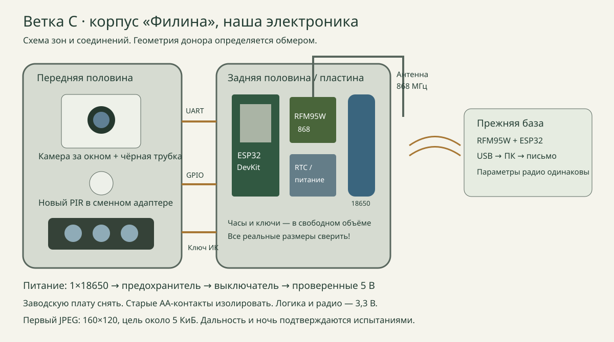

Выбранная конструкция
Покупаем неисправный «Филин» с целым корпусом, снимаем заводскую основную плату и устанавливаем AI Thinker ESP32-CAM + ESP32 DevKit + RFM95W 868 МГц. Камера снимает небольшой JPEG, управляющий ESP32 включает её по PIR и передаёт кадр по LoRa на существующую базу. Заводская SD-карта и процессор больше не участвуют: получать доступ к их файловой системе не требуется.
Это третий вариант общего проекта: A — полностью свой корпус, B — получить файлы работающей заводской камеры, C — заменить электронику в донорском корпусе. Он сохраняет программную архитектуру A и позволяет использовать готовую оболочку. Работоспособность именно этого размещения ещё предстоит проверить на доноре.

Источник фотографии: карточка «Филин HC-800A» на Ozon. Это пример семейства корпусов, а не найденное предложение неисправного б/у экземпляра. Нужный донор выбирается по фотографиям внутренностей и измерениям.
Какой «Филин» покупать
Первым искать HC-800A либо сопоставимый полноразмерный «Филин 120» без GSM, с доступной передней половиной и съёмной платой. HC-300A также рассматривается, если хватает внутреннего места. Название «Филин» встречается у разных конструкций: номер модели не гарантирует одинаковых стоек, разъёмов или питания.
Не покупать донора только по внешнему виду. Попросите фото открытого корпуса, батарейного отсека и платы. Нужны неповреждённые защёлки/петли, ровный стык, целые прозрачные окна, линза PIR и ременные крепления. Коррозия контактов, вода внутри, треснувшая линза или сгнившая прокладка снижают пользу донора. Сломанная основная плата допустима; разбитый корпус — плохой донор для этой ветки.
Поиск: б/у «Филин» на Авито, HC-800A на Ozon, «Филин» на WB. Это ссылки на поиск, наличие и цена б/у не проверены. Покупка работающей дорогой камеры ради одного корпуса обычно требует отдельного сравнения с печатью.
Что оставляем, что устанавливаем
| Узел донора | Решение первого образца | Причина |
|---|---|---|
| Корпус, петли, замки, ремень | Оставить после осмотра | Экономим изготовление оболочки |
| Прокладка | Оставить только эластичную целую, иначе заменить | Старый IP не доказывает состояние б/у изделия |
| Окно камеры | Оставить после оптической проверки | Новый объектив выставить точно напротив окна |
| Окно ИК-подсветки | Оставить, проверить пропускание 850 нм | Тёмное окно может заметно ослаблять выбранные LED |
| PIR | Новый AM312 со своей линзой, в сменном адаптере | Распиновка и геометрия штатного датчика неизвестны |
| Штатная линза PIR | Запасной вариант после испытания | Чужая линза не гарантирует фокус на новом чувствительном элементе |
| Камера и основная плата | Снять, не подключать | Неизвестные шлейф и протокол; нужен управляемый JPEG |
| Штатная LED-плата | По умолчанию снять; можно вернуть после измерений | Неизвестны соединение LED, ток и драйвер |
| Штатные AA-контакты | Не подключать к исходному питанию MVP | 4/8 AA не равны одной Li-ion ячейке |
| Сотовая антенна, если есть | Снять/заменить | Не доказано согласование на 868 МГц |
Снять батареи до разборки, сфотографировать проводку, подписать детали. Не использовать неизученную заводскую плату как распределитель питания.
Комплект электроники
| Блок | Количество на пост | Функция |
|---|---|---|
| ESP32-CAM AI Thinker с PSRAM | 1 | JPEG, пока без очереди на SD |
| Совместимая NoIR камера/оптика | 1 | Чувствительность к ИК ночью; совместимость пока надо подтвердить |
| ESP32 DevKit 30 pin | 1 | PIR, часы, питание камеры и LoRa |
| RFM95W 868 на SX1276 | 1 | Радио; питание 3,3 В |
| Антенна 868 SMA + пигтейл 50 Ом | 1 комплект | Внешняя вертикальная антенна |
| AM312 | 1 | Сигнал движения |
| DS3231 + безопасная резервная батарейка | 1 | UTC события |
| Новые LED 850 нм, резисторы 18 Ом 2 Вт, радиаторы | По 3 | Проверяемая новая ночная подсветка |
| AO3400, AO3401, 2N3904, переходники и резисторы | По исходной схеме | Ключи подсветки и камеры |
| Защищённая 18650, подходящий держатель, boost 5 В | 1 комплект | Питание без использования неизвестного AA-отсека |
| Предохранитель, выключатель, конденсаторы и проводка | По исходной схеме | Защита и устойчивость питания |
Все карточки и ссылки находятся в каталоге 33 деталей. База остаётся прежней: DevKit + RFM95W + антенна → USB → имеющийся ПК. Солнечное питание в этот образец не добавляется.
RFM95W требует проверенного питания и достаточного запаса тока. Карточка boost MT3608 с надписью «2 А» не подтверждает нужный выходной режим: 5 В под камерой и LED проверяются на разряженной батарее до установки в корпус. Подробности в схеме питания.
Размещение внутри: сначала измерения

Рисунок — схема связей и зон, не обмер конкретного «Филина». Камера крепится к передней половине, соосно верхнему окну. Чёрная трубка между объективом и стеклом отделяет его от подсветки. PIR располагается в своём отверстии, LED — за штатным нижним окном. DevKit, RFM95W, RTC и ключи крепятся к задней пластине. Батарея — в отдельном изолированном держателе, с доступом без демонтажа оптики.
Для начального шаблона предусмотрена задняя пластина 70×95 мм, камера — отдельный держатель 54×58 мм. Это исходные размеры адаптеров, не подтверждённые посадки корпуса. Платы DevKit и RFM95W размещаются на пластине по высоте; часы и силовую перфоплату приходится разместить в другом свободном объёме либо сделать пластину больше. Нельзя обещать, что весь комплект поместится на одной 70×95 пластине.
До печати измерить:
- Свободные ширину/высоту задней половины и доступную глубину после закрытия.
- Координаты и диаметр штатных стоек. Установка к существующим стойкам предпочтительнее новых отверстий наружу.
- Диаметр/положение окна камеры и расстояние от стекла до платы; объектив и шлейф тоже занимают место.
- Размер отверстия PIR и место для его штатной новой линзы.
- Свободное место для держателя защищённой 18650: предварительный резерв 22×80×23 мм.
- Размер радиатора LED, свободное расстояние до пластика и путь коаксиального кабеля.
Если корпус не вмещает эти объёмы без давления, выбрать более крупного донора. Переход на одну плату XIAO/S3 возможен как отдельная переработка схемы; текущая распиновка и прошивки на неё автоматически не переносятся.
Адаптеры для 3D-печати
Скачать комплект адаптеров STL/STEP и исходник. В нём задняя пластина с прорезями для стяжек, держатель камеры, трубка от засветки и пробник отверстий. Пластина имеет универсальные монтажные прорези: реальные стойки измеряются и при необходимости добавляются в CAD. Не выдаём выдуманную точную модель заводского корпуса.
Исходник filin_adapters.py использует CadQuery. Параметры WIDTH/HEIGHT, размеры держателя и трубки меняются отдельно. Перед большой печатью вырежьте бумажный шаблон 1:1 по размерам, примерьте платы и разъёмы, закройте обе половины. Затем напечатайте пробник и адаптеры PETG. Начальная настройка: сопло 0,4 мм, слой 0,2 мм, 4 периметра, профиль материала производителя. После печати ещё раз проверьте посадку и зазор крышки.
У держателя камеры регулируемые прорези; фиксировать плату изолирующими креплениями/стяжками, без давления на шлейф. Плату нельзя приклеивать горячим клеем непосредственно к стеклу. Длину трубки подгонять по объективу: она не должна закрывать края изображения. Для прозрачных окон и прокладок печатный PETG не считается заменой оптического стекла или штатной PIR-линзы.
Электрическое подключение и прошивки
Используются те же GPIO, что в схеме ветки A: PIR → GPIO33, ключ камеры → GPIO32, ИК → GPIO25, RFM95W по SPI18/19/23 с CS5, RESET14 и DIO0 GPIO26. DS3231 по I²C21/22. Камера отдаёт UART с U0T на RX2 GPIO16; обратный TX2 не подключён, чтобы не подпитывать выключенную камеру.
Важно: текущая камера отправляет JPEG после включения питания сама. Упрощённая учебная схема «команда UART → снимок» здесь не описывает реализованную прошивку. Управляющий ESP32 включает ИК и питание камеры, получает заголовок CAM1 и JPEG, затем выключает нагрузки и отправляет фрагменты. Параметры радио должны совпадать с базой.
Прошивки firmware/camera, firmware/node, firmware/gateway и настройка RTC остаются исходными. Они не скомпилированы и не испытаны на железе. Включать RF только после выбора допустимого режима для места установки.
Питание: не смешивать батарейные схемы
Базовый вариант: одна защищённая Li-ion 18650 → предохранитель → выключатель → проверенный boost 5 В. В донорском корпусе её держатель устанавливается отдельно. Проверьте изоляцию старых AA-контактов и доступ к выключателю. Логика радио, GPIO, PIR и RTC остаётся 3,3 В.
Если хочется использовать заводской отсек AA, это отдельный вариант питания: пересчитать диапазон напряжений, выбрать buck/boost под количество и тип элементов, ток LED и порог отключения. Нельзя подать 6–12 В AA-отсека на входы 5 В/3,3 В; исходный повышающий преобразователь не служит универсальным понижающим.
USB-зарядка через TP4056 только при выключенной нагрузке, либо съёмная батарея заряжается отдельно. После размещения измерьте ток сна всего поста: индикаторы и USB-чип DevKit могут ухудшать автономность.
Можно ли оставить родную подсветку
Да, если она исправна и понятна электрически, но это опция после измерений. Сначала определить количество последовательных LED в ветвях, рабочий ток, полярность, напряжение и наличие заводского драйвера. Начать с ограниченного тока лабораторного источника; не подключать неизвестную матрицу напрямую к батарее или GPIO.
Если LED-плата рассчитана, например, на напряжение выше 5 В, нужен другой драйвер и перерасчёт питания. Схема трёх новых LED с 18 Ом не переносится на произвольную матрицу из 36 LED. Проверить нагрев, отражения в стекле и реальное изображение на 1/3/5 м. Замена платы лишает смысла рекламные обещания заводской ночной дальности.
Что означает «хорошо работает с LoRa»
Начальная настройка — JPEG160×120, качество35 в камерном драйвере, цель около 5 КиБ; размер каждого кадра измеряется. Это маленький снимок для оценки события, не обещание лица/номера. Контроль CRC32, фрагменты, ACK и повторы остаются общими с веткой A.
На SF7 5 КиБ занимают около 9,2 с собственного DATA-эфира, теоретическая непрерывная передача с ACK — не менее примерно 10,8 с без потерь. При расчётном duty 1% бюджет узла около 15,3 мин, а не «10 секунд до письма». На SF9 — около48 мин, на SF12 — около5,85 ч. Duty 1% здесь сценарий, допустимый режим определяется отдельно. Калькулятор.
Размещайте антенну снаружи вертикально; крепление не должно пережимать коаксиал. Старый проход сотовой антенны можно использовать механически лишь при подходящем диаметре и восстановленном уплотнении. Изолировать радио от металлических экранов и батареи насколько позволяет конструкция. Дальность через лес проверяется тем же полевым тестом, что и для собственного корпуса.
В исходном тексте есть технические неточности: Ra-02 — SX1278, 410–525 МГц, для нашей базы868 не подходит; E22 имеет разные исполнения/интерфейсы и требует другого драйвера. Ai-Thinker Ra-02. XIAO ESP32S3 Sense сейчас может иметь OV3660, её камера и свободные GPIO проверяются по ревизии. Seeed. TS3USB221 — двухканальный USB-переключатель, не готовое решение всей SD-шины. TI.
Большое фото не физически «невозможно» передать по LoRa, а непрактично при ограничении эфира и батареи. Уменьшать его нужно на посту до передачи, уменьшение уже на базе не экономит радио. 320×240/640×480 не гарантируют 10–30 КиБ: размер зависит от сцены, шума и сжатия.
Смета варианта C
Основа — электроника общего MVP с базой. Из 12 591 ₽ убираем новую коробку215 ₽ и прежнюю печать800 ₽: остаётся 11 576 ₽. Добавляем предварительно донор500–2000 ₽, адаптеры400–1000 ₽, восстановление уплотнений/крепления200–600 ₽. Итого 12 676–15 176 ₽, с резервом25% — 15 845–18 970 ₽. Это расчётные допущения, не проверенные цены б/у или подрядчика; возможные пересечения мелочей уточняются по фактическому комплекту.
Если база уже собрана, не покупайте её второй раз: из этой общей суммы исключаются её фактические компоненты. Использование исправных донорских LED/PIR может сэкономить деньги только после проверки; в стартовой смете такой экономии не обещаю.
Последовательность испытаний
- Осмотр донора и измерение внутренностей; бумажная примерка без батареи.
- Электроника вне корпуса: питание, дневной JPEG, PIR, UTC и радиопара на столе.
- Пробная установка камеры: соосность окна, фокус, отсутствие виньетирования; затем PIR и ночной тест.
- Окончательные адаптеры, новая проводка и уплотнение вводов. Обслуживание без натяжения проводов крышки.
- Пустой корпус с сухой бумагой: проверка влаги до установки электроники. Старый паспорт IP после разборки/сверления не переносится автоматически.
- 100 событий на собранном посту: полные JPEG, отсутствие сбросов, измерения расхода; зарегистрировать пропуски во время передачи. Очередь дополнительных событий в текущей прошивке ещё отсутствует.
- Реальная трасса: 100 коротких контрольных пакетов в каждую сторону, потери/RSSI/SNR; затем фотографии при выбранном SF и режиме эфира. Увеличивать SF только с пересчётом времени.
Готовность этого варианта подтверждается результатами конкретного донора, а не названием модели. Подготовлены схема, комплект электроники и параметрические адаптеры; корпус ещё не куплен/обмерен, сборка и полевые испытания не выполнены.